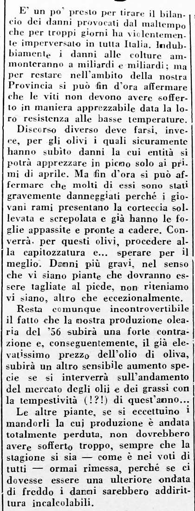

Il contadino o colono traeva il suo sostentamento quasi esclusivamente dal lavoro nei campi, dall'allevamento del bestiame da stalla e da pollaio. Un reddito gli derivava dalla vendita dei prodotti in surplus nelle stagioni favorevoli, dalla gestione delle stalle con la vendita di capi di bestiame, di cacio, di lana e di animali da cortile, e da qualche opra che il padrone o altri gli richiedevano col carro o come bracciante. In epoche più lontane molti contadini realizzavano un introito ricorrendo al lavoro artigianale confezionando ceste, panieri o tele e capi di abbigliamento al telaio come dalla vendita di canapa, lino e bachi da seta.
Le entrate, sempre di modesta misura, gli consentivano di acquistare nelle botteghe e dai treccoloni tutti quegli alimenti e articoli indispensabili per la famiglia, anche se molti rapporti si regolavano con il baratto di prodotti vari, prima di tutto le uova. Inoltre, qualche lira, segretamente (ma non troppo) custodita dal capoccio, poteva essere risparmiata.
Il calendario produttivo del contadino era legato ai cicli stagionali; aveva quindi le sue naturali scadenze. Ad ogni stagione corrispondevano i suoi lavori: di semina, di raccolta o di sistemazione dei campi, ed il contadino era obbligato al rispetto del calendario altrimenti avrebbe "mandato a male" il raccolto; rinvii o anticipi delle operazioni agricole lo compromettevano seriamente.

Soprattutto, il contadino era colpito, anche gravemente, dalle irregolarità stagionali che per lui erano vere e proprie calamità. Là, dove pioveva troppo, o grandinava, o la siccità durava a lungo, si perdeva buona parte del raccolto. Le conseguenze erano nefaste per la famiglia costretta a ricorrere alle prestanze del padrone per sopravvivere, indebitandosi irrimediabilmente.
I fenomeni stagionali negativi erano più frequenti di quanto si pensi e in questi casi uno o due dei tre principali raccolti, grano, vino e olio, subiva una diminuzione nella resa. Una stagione regolare equivaleva a buone rendite. Le colture contadine, infatti, erano molto sensibili a tutti quei fattori legati al clima e al rispetto dei tempi e qui entrava in ballo l'esperienza del contadino il quale sapeva quando e come muoversi. Era insomma un equilibrio delicato, una dipendenza totale dalla natura che richiedeva buon fiuto e anche fortuna.
Sono tante le memorie di fatti straordinari legati alle stagioni, con gravi escursioni che andavano dalla siccità alle piogge abbondanti, o al gelo, che causarono danni notevoli alle colture con pesanti ripercussioni con i raccolti. Fra le tante si ricordano particolarmente per la loro eccessiva, negativa, incidenza sulle colture, quelle delle annate 1932 e 1956.
Per il 1932, Salvatico rammenta che in famiglia Cancelli si parlava spesso di quell'annata con la produzione del vino azzerata:
“Le viti furono assassinate dalla grandine e il grano sciupato dalla tempesta. Da una produzione di 150 quintali di vino ne ebbero in quell'anno pochi fiaschi e anche il grano fruttò poco o niente. Fu un periodo di grande carestia”.
Pochi ricordano il 1932, ma tutti si rammentano ancora del 1956, del grande freddo e delle nevicate che per un mese flagellarono la provincia e l'Italia intera. Le temperature si mantennero a lungo sottozero con forti gelate notturne e a patire, tra le colture contadine, fu l'olivo, più sensibile della vite alle basse temperature. I risultati furono terrificanti con la perdita del 50% delle piante e, come abbiamo visto, alcuni coloni lasciarono i poderi. I contadini vennero rimborsati per la perdita del raccolto dell'olio:
"Mi chiamarono da Vagliagli per avere il rimborso dei danni e mi diedero un pacco di pasta e poco più. Lo presi a calci e tornai a mani vuote”.
Anche ogni tipo di allevamento esigeva attenzione competenza e metodo nell'affrontare le tante malattie che colpivano gli animali da lavoro e d'allevamento, con tutte le problematiche ad essi legate.
Mancando una uniforme distribuzione delle opere nei dodici mesi, il periodo di lavoro estivo da maggio a ottobre si presentava come quello più faticoso per il contadino sia per il caldo sia per l'inizio dei lavori più pesanti che lo tenevano impegnato da sole a sole per zappature, segatura, tribbiatura e vendemmia, mentre al contrario la stagione invernale dedicata al riassetto dei campi e altri lavori consentiva un riposo maggiore.
Il grande vantaggio dei poderi della nostra zona rispetto a quelli delle crete e della maremma era la pratica della coltivazione promiscua: dava i tre fondamentali prodotti per l'alimentazione o la vendita, come grano, vino e olio, ai quali si aggiungeva la coltivazione di fieni per gli animali, e per uso alimentare di legumi, ortaggi e alberi da frutto che numerosi spuntavano lungo le prode e i filari. Un ambiente che consentiva l'allevamento di maiali con ombrosi boschi di querce, posseduti da quasi tutte le fattorie, fornitori, inoltre, di funghi commestibile e castagne. Pasture erbose con numerosi ruscelli per l'abbeveramento permettevano l'allevamento di pecore che fornivano formaggi e lana. La coltivazione di canapa e lino alimentava a filatura e la tessitura di capi d'abbigliamento e pezze di diverso impiego. Un mondo idillico, a prima vista, dove la famiglia contadina poteva ricavare il necessario per vivere e un buon reddito se non ci fosse stato il padrone a prendere la metà dei raccolti, se non ci fosse stato il tempo capriccioso a rovinarli.
Quanta differenza, però, con gli assolati poderi della Val d'Arbia e delle Crete dove dovevi girare un giorno per trovare un filo d'ombra e dove non crescevano né olivi, né viti, e dove lo strutto ricavato dai maiali sostituiva l'olio d'oliva. Infatti, era là che venivano allevati suini fino a due quintali per ottenere ingenti quantità di strutto con la competizione fra i contadini a chi ne produceva di più.
Anche i contadini dei sassosi e sterili poderi dell'alta collina guardavano con invidia i nostri poderi.
Nelle righe seguenti, dopo alcuni ricordi, presento l'esperienza del lavoro contadino nella produzione maggiore di grano, vino e olio. Continuando col criterio di comprendere l'impegno produttivo del mezzadro, accenno ai prodotti minori del podere, parlo dell'allevamento sia da cortile sia di stalla e concludo con i lavori extra. Alla fine del capitolo ci saremo fatti un'idea del gravoso impegno che attendeva giornalmente la famiglia contadina.
Bruno Sestini:
"In famiglia s'era 11 nel 1935. Da piccolo guardavo i maiali come tutti, poi crescendo facevo tutti i lavori".
Giulio Carli:
"I ragazzi con gli adulti a rincalzare il granturco, fagioli, e fave con zappe e ubbidienti. S'aveva dieci anni e ci misero la zappa in mano. D'inverno lavori di manutenzione attrezzi. I Carli andavano a battere la coccola".
Anna Masti:
"Ci hanno fatto lavorare come gli uomini; s'è tirato avanti il podere come gli uomini. Non s'è zappato con l'ubbidiente (per le viti), mentre si con la zappa per scalzare: si rincalzava il granturco, le patate e le bietole; gli si rimuoveva la terra, allora crescevano".
-
"Nelle giornate calde il riposo di almeno un paio d'ore ci scappava".
-
"Il contadino d'inverno, per qualche lira aiutava a tagliare il bosco; doveva poi fare le
fastella per il forno, lavorare in cantina, riparare carri e altri attrezzi, fare i pali per le viti, per i carri, tagliare i salci".
Zia Ilda:
“Si cavavano le pecore e i maiali prima di andare a scuola, s’aveva 5/6 anni; si portavano nel bosco quando c’era la ghianda e nell’inverno tutti i giorni con una giubbaccia addosso e una fetta di pane con i fichi secchi in tasca”. Due ragazzi con i maiali e uno con le pecore. D'estate si contavano le stelle quando si usciva e si rientrava verso le nove e mezza perchè i maiali non mangiavano più. Cercavano un po' d'ombra (meriggiavano) e allora si mandavano a casa; s’era anche in tre ragazzi per guardare le pecore. D'inverno le pecore si mandavano insieme a quelle d'un altro contadino un certo Palanca dei Bandinelli”. Fino a quando tornò a Quercia, cioè tredici anni, Ilda guardò sempre maiali e pecore e portò da bere in segatura. A rimettere le manne i ragazzi non ce la facevano ad alzarle e le trascinavano, allora li brontolavano:
"Oh! Sciupate tutte le spighe. C'era poco riguardo per i ragazzi. In tante famiglie la parte di affettato non c'era per i ragazzi. Tenevano lo zucchero a chiave; l'ova non si potevano mangiare perchè c'era da venderle; c'era solo il pane. Anche i fagioli erano 5/6 in quel sugo di pomodoro. Il vimini per fare i panieri si ricava dal salice. Quando tornavano i miei fratelli dallo Scrittoio s'era sempre in debito. Il grano non cresceva, venivano temporali, la grandine. A Cerna s’aveva la madia col buratto. Ci chiamavano antigiorno per stacciare (a burattà)
: il rumore mi faceva la nanna. I miei fratelli andavano a Cerna a fare la fossa per guadagnare qualcosa.
Paragrafo successivo
Coltratura
Inizio pagina
Vai all'Indice dei Capitoli